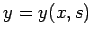
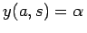
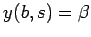
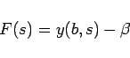
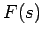

Inhalt Index DeskTop Bronstein

 Numerische Mathematik Integration gewöhnlicher Differentialgleichungen Randwertaufgaben
Numerische Mathematik Integration gewöhnlicher Differentialgleichungen Randwertaufgaben


Mit dem Schießverfahren wird die Lösung von Randwertaufgaben auf die Lösung von Anfangswertaufgaben zurückgeführt. Das Prinzip soll am sogenannten einfachen Schießverfahren, auch Einzielverfahren genannt, beschrieben werden.
zugeordnet. Dabei ist s ein Parameter, von dem die Lösung y der Anfangswertaufgabe (19.134) abhängt, d.h., es gilt . Die Funktion y(x,s) erfüllt gemäß (19.134) die erste Randbedingung . Der Parameter s ist so zu bestimmen, daß y(x,s) auch die zweite Randbedingung  erfüllt. Dazu ist die Gleichung
|  | (19.135) |
zweckmäßigerweise mit Hilfe der Regula falsi zu lösen. Diese benötigt nur Funktionswerte , aber jede Funktionswertberechnung erfordert die Lösung der Anfangswertaufgabe (19.134) nach einem der im Abschnitt Anfangswertaufgaben angegebenen Verfahren bis x = b für den speziellen Parameterwert  .
.